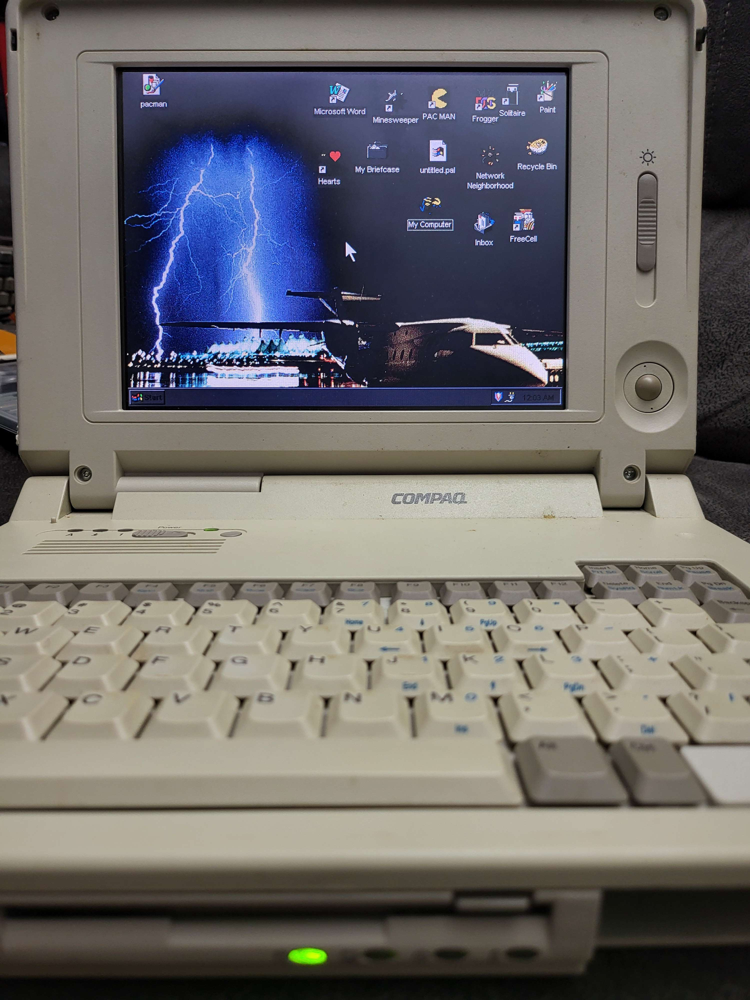

Compaq LTE Elite 4/75CX

This is the first repair from the group of machines I received from a friend. It is a Compaq 486DX4/75 laptop with a 9.5" screen, 16MB of RAM, and a 340MB hard drive. The hard drive a standard 2.5" IDE drive, but it's stuck inside and aluminum "can" with a proprietary connector exposed instead of the normal one. When I first performed a triage on the machine, it powered up, but the screen was shattered and the hard drive was dead, and the floppy drive was in need of repair.
I did some searching on eBay and found a 4/50CX for cheap. This unit was listed as non-working and appeared to have been dropped. The main thing I was looking at in the listings was the screens. Most either appears to have cracks or to be delaminating, or didn't show individual pictures. Because this one was is such rough shape, the seller took lots of photos showing all the damage; cracked plastic, broken hinges, missing trackball, etc. But the screen looked like it was in great shape. So I pulled the trigger.
When I received it, I didn't even test it. There's a good chance it would have fired right up and just needed extensive plastic repair to get it back into a reasonable condition. But it was a random busted laptop from eBay, not something my friend's father passed on to be restored and cared for. My friend new that I would take care of his old collection, which is how I wound up with a rather large collection of mostly laptops in need of some TLC. So I figured out how to open the screen and completely stripped everything from inside it, including the hinges. I disassembled this laptop's screen and swapped them. There was only two connectors which disconnected the screen and four screws holding it in, so it was a pretty easy task. Plastic this old is pretty brittle, though, so care was taken not to weaking the plastic where the hinges attach any more than it already was. I plugged the laptop in and powered it on, and was greeted with it counting up the RAM and a perfectly good screen!
Next up was the hard drive. I hadn't opened the "can" on the old one yet, so as far as I knew, it was a completely proprietary drive. I noticed that the part number on the donor machine's drive matched the part number on this one, so I figured I'd give it a try. Imagine my surprise when it fired right up and loaded Win95. I believe DOS/Win31 would have been what this laptop shipped with, but I'll take the win. I know I'll have to prepare the can from the dead drive with a different solution at some point, but I'm happy with this drive for now.
At this point, I hadn't opened the laptop up except for the screen, but I wanted to see if the donor's floppy drive still worked, so I swapped those. In the process, I discovered some broken plastic parts inside so pulled them from the donor. Unfortunately, the floppy drive is dead. Research seems to indicate that it is a belt-driven drive, and the belts tend to melt over time. This is a problem for another day, though. As is a good cleaning. Aside from those, this machine is done, and I am completely happy that I was able to make good on the promise to keep it out of a landfill and get it running again.
Now I have a (potentially) working Elite 4/50CX with a busted screen and dead drives, as well was broken plastics, which I am unsure what I want to do with. I'm thinking of 3D-printing a case for the motherboard and such and using it with an external monitor. Then repairing the plastics and stuffing a Raspberry Pi into the shell. Or just testing and organizing all the leftover parts so that I have spares to help keep this one running. The CPU is socketed, so even the mainboard is the same between the two machines. Only the CPU speed is different.
 times
times